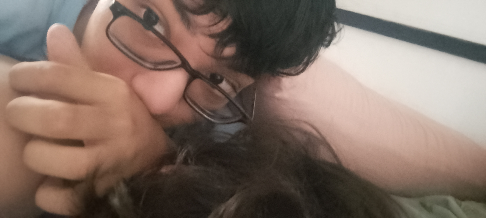
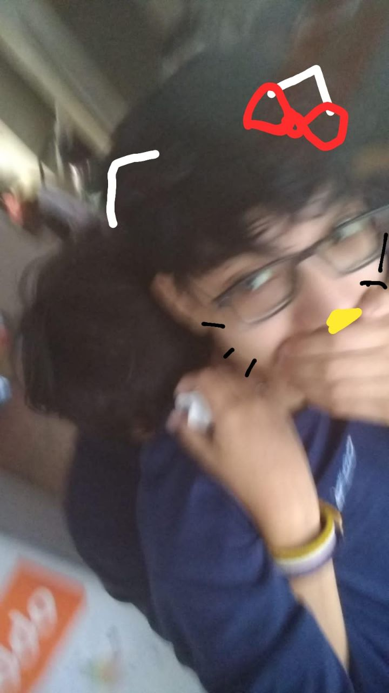
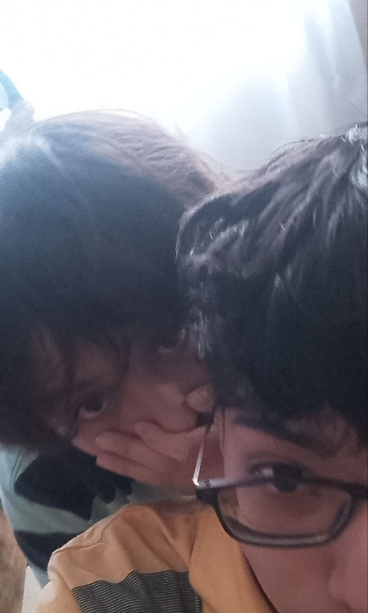

Está es la despedida
Quisiera que lo salvaras
Aún lo puedes salvar
¿Pero lo quieres salvar?
No hiciste nada malo(dvd)
Solo que me buscaste porque te dejaron(eso pienso :c),
lo cual me hace ser el segundo ¿por tercera vez?
Me dijiste que sabías que te iba a dejar,
cuando le decías "extraño hablar con Donnie"
¿Pero y si no te dejaba?
Creo que no me buscabas
Cuando dijiste "extraño hablar con Donnie" no tiene peso si yo no te gustaba,
de hecho me dijiste ya 3 veces que no te gustaba, hasta lo confirmaste(altruista)
Si te gustaba y me extrañabas le hubieras dicho "llegamos hasta acá",
y le dejabas
Ese fue el problema, no hubo iniciativa(buuuuu)
Si no te gustaba, ¿por qué le dijiste eso?(no tiene sentido)
Es contradictorio(puto enfermo(parentesis sobre la parentesis no idea como hago la tilde))
Parece que soy la segunda opción
Me llegaron fotos y textos,
después de que te habías ido(me daba igual pero no me metan en sus dramas)
Btw en otro pov me daría pena, yo mismo,
ver cómo soy el segundo
Es más que nada ese el motivo,
y él te dice que todo será como antes,
pero caes en un bucle constante
y vuelves a buscarle(totalmente rial mda le paso lo mismo)
Aunque esta vez parece que lo intentaste,
no como antes,
que te pasaste mandándole mensajes,
viéndolo casi toda la semana,
hasta dijiste que nos hagamos amigos(hasta llamada wtf),
y después de todo eso siempre preguntaste "¿por qué no lo superaste?"
Osea, no tiene sentido(puto enfermó(ahora si encontre la tilde pero en google)),
¿cómo vas a olvidar a alguien si siempre intentas estar con él?
Encima ahora vas a un quince donde seguro está él,
y querías anotarte en su misma escuela
Osea, no tengo ganas de quedar de vuelta como el tomtopoia
Encima estoy con ganas de no ver a nadie
Aunque no me molesta si sos vos
Creo que se entendió, y si no, dile a Juli, psicoanalízame está
Ojalá termine la carrera de psicología
Tiene toda la pinta de psicóloga
¿Así que soy el segundo?
No idea
Explico muy mal las cosas
Btw si decides no decir nada, bye chafalito suerte :D
No te bloqueé de WhatsApp
De hecho, no lo voy a hacer
Así que si tenés ganas de decir algo,
o despedirte,
lo que sea.



Se renueva temporada?